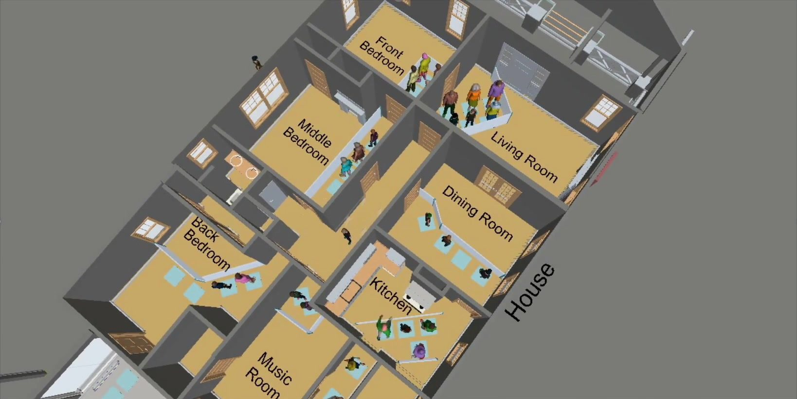
The Jackson HomeVisitor FlowSimulation
A predictive model of how visitors would move through a historic house, built before anyone walked in.
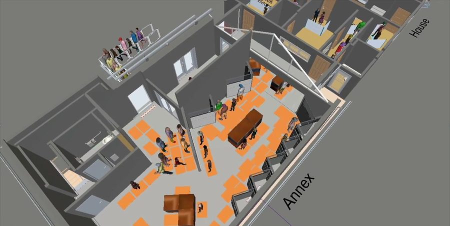
Role
UX Researcher, Experience Design

Methods
Observation, space syntax, simulation
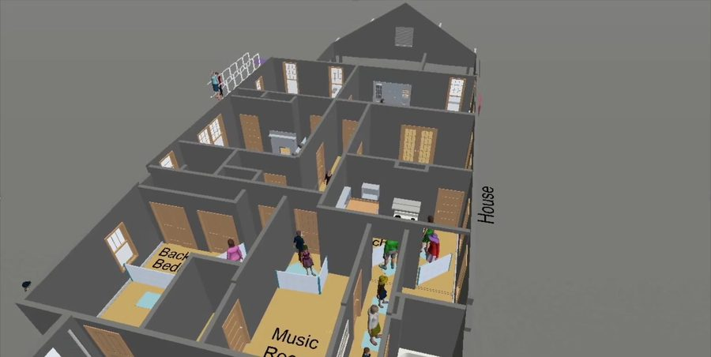
Setting
Greenfield Village, The Henry Ford
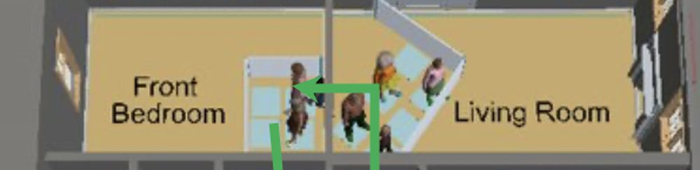
Year
2026
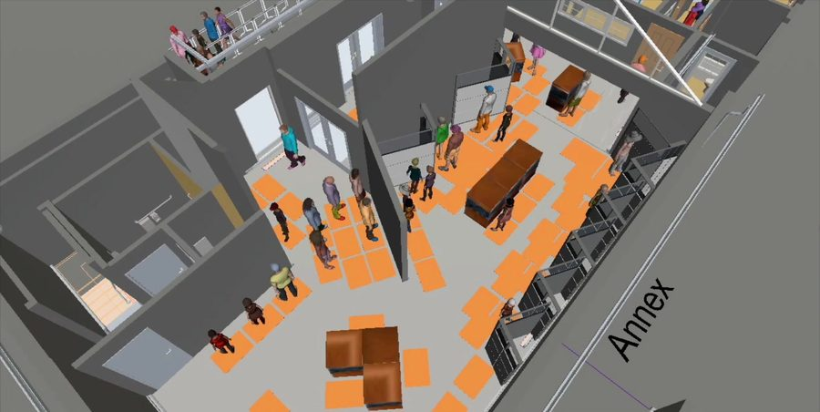
Key number
30
visitors per 15-minute window
Overview
The first building added to Greenfield Village in more than forty years, with no visitor data to plan from.
The Dr. Sullivan and Mrs. Richie Jean Sherrod Jackson Home is a nationally significant house tied to the 1965 Selma to Montgomery marches. Civil rights leaders, including Dr. Martin Luther King Jr., met there to plan the strategies that led to the Voting Rights Act. Moved to Greenfield Village, it opened as a permanent exhibition in summer 2026.
With no historical visitor data, my role was to build a predictive visitor flow model: a forecast of how guests would move through the constrained historic space before opening day.
Using UX research methods and behavioural modelling, the simulation let stakeholders compare ticketing strategies, estimate capacity, find congestion points, and decide where presenters should stand.
The challenge
- 01Narrow circulation paths
- 02Limited room capacity
- 03Sequential visitor movement
- 04Preservation rules: no structural changes
How might wepredict visitor behaviour and shape the museum experience before the exhibition opened to the public?
Chapter 01— Research questions
Eight questions before opening day.
Visitor experience. How long will visitors spend inside the home? Where will they stop, or get stuck? What will waiting look like?
Capacity planning. How many visitors can the Jackson Home and the Annex hold without overcrowding? Should tickets use 15- or 30-minute windows? Can walk-up visitors be added without hurting the experience?
Operations. Where should docents and presenters stand? What should staff do at peak times?
Chapter 02— Methodology
No baseline data, so I built one.
Behavioural observation. I studied visitor movement in comparable historic homes and exhibits at The Henry Ford: arrivals, walking speed, dwell time, congestion, engagement, and decisions at the thresholds between rooms.
Space syntax analysis. With the experience design team, I read the home’s layout for visibility, connectivity and circulation, to find likely bottlenecks before testing any scenario.
Behavioural path clustering. Visitors engage at different depths, so each simulated visitor was assigned a type, and viewing times were set to match.
Signature— The visitor’s route
Seven stops, one path.
The route every simulated visitor followed. Stops marked in red are where congestion built up, with the numbers from the model.
-
Arrival
Entrance line
Visitors arrive inside a 15- or 30-minute ticket window. The base plan was 24 tickets per 15 minutes; walk-ups join once ticketed visitors are in.
Up to 16.5 min wait in the busiest scenario tested
Fig. 01
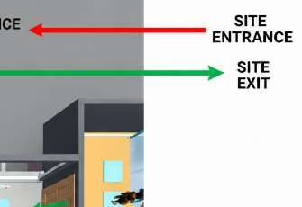
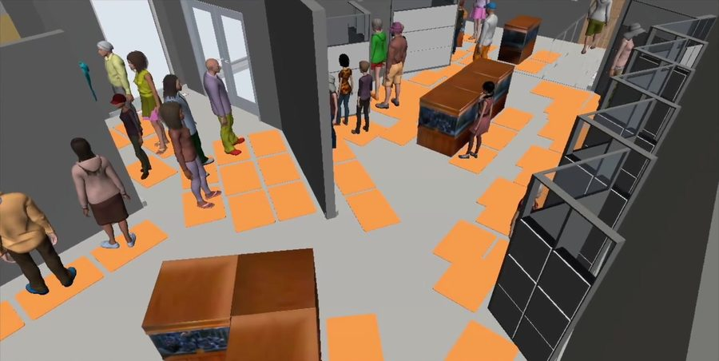
-
Docent-controlled
Vestibule
The first threshold. With docent control, about 8 people are let in at a time.
~8 visitors at a time
Fig. 02
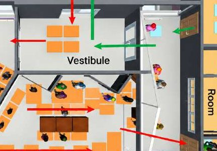
-
Docent-controlled
Pre-1965
Part of the entrance area the docent manages, and one of the first exhibits.
Presenters at the first exhibits reduced skipped exhibits
Fig. 03
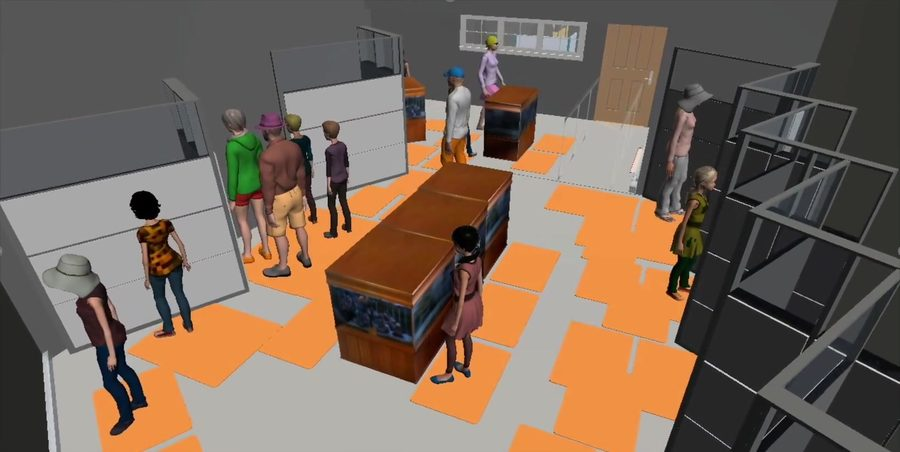
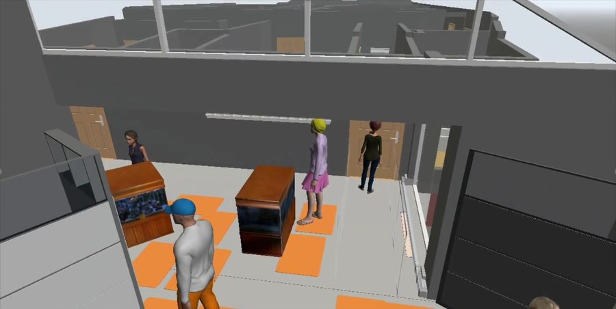
-
Docent-controlled
Video wall
The last stop of the entrance area before visitors move on in sequence.
Still inside the ~8-person docent zone
Fig. 04
-
In sequence
The rooms
Front bedroom, living room, dining room, kitchen, music room. Each room has an occupancy limit; when one is full, visitors wait or move on.
Fig. 05
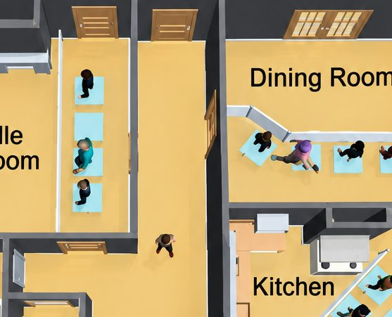
-
Digital interactives
The Annex
The complementary building with digital interactives. The model helped decide where the interactives went.
Fig. 06

-
Leaving
Exit
Streakers leave after 8–20 minutes, Strollers after 30–45, Studiers after 50–65.
Fig. 07
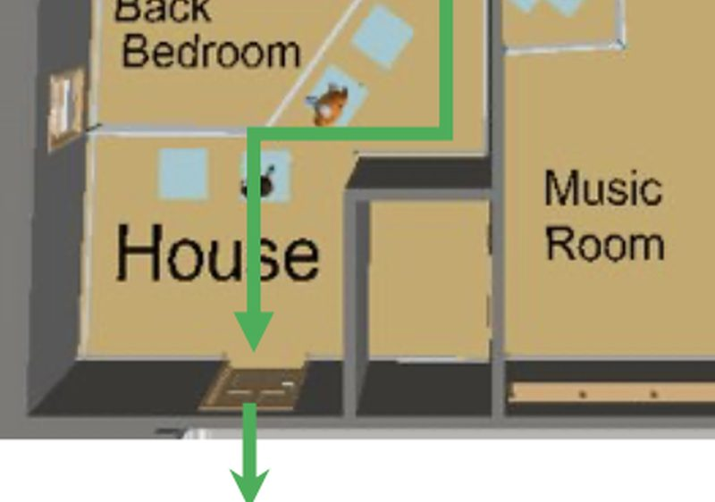
Chapter 03— Visitor archetypes
Three ways to visit.
- 60%Strollers
Browse most exhibits with moderate viewing time. 30–45 min on site. - 30%Streakers
Move quickly with minimal stopping. 8–20 min. - 10%Studiers
Read the interpretation thoroughly and stay longest in each room. 50–65 min.
Each simulated visitor was randomly assigned one of these profiles, based on museum research and checked against The Henry Ford’s attendance patterns.
Chapter 04— Building the simulation
Every visitor made their own decisions.
Using the behavioural research, I built a discrete event simulation of individual visitors. Each one navigated the home independently, following the expected paths through the house and reacting to the constraints below.
- Timed ticket arrivals
- Room occupancy limits
- Queue formation
- Walking speed, about 2.0 mph
- Exhibit dwell time by visitor type
- Presenter intervention
- Alternative routing when a space is full

Chapter 05— Scenario testing


{kind=link}
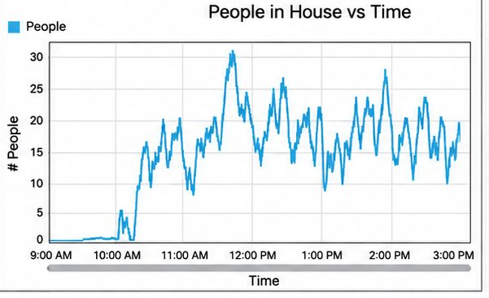
15 min
ticket windows beat 30-minute ones when most visitors arrive at the start of their slot.
Study factors: ticket window (15 or 30 min), arrival pattern, docent control, number of tickets (low, base, high) and walk-up visitors.
30
visitors per 15-minute window felt comfortable. The house could take about 32.
{kind=link}
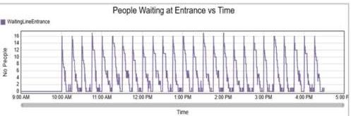
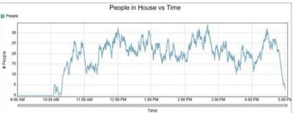
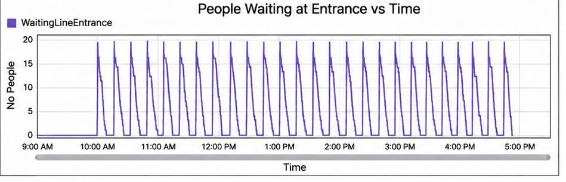
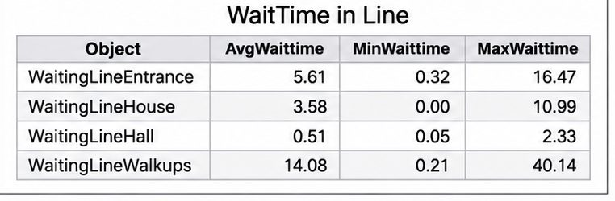
Black-box gallery
The model, running
Each figure is one simulated visitor, deciding where to go based on space and behavioural rules.
Findings
Ticketing
15‑min
15-minute ticket windows spread arrivals more evenly than 30-minute ones and cut congestion through the home.
Capacity
30
visitors per entry window: noticeably more comfortable than the maximum of about 32, and still efficient.
Presenters
3–4
presenters in key zones, starting near the first exhibits, to regulate entry and reduce skipped exhibits.
Walk-ups
Mixed
A controlled mix of ticketed and walk-up visitors staggered arrivals and shortened waits.
Decisions made on evidence.
The simulation gave stakeholders evidence-based recommendations before the Jackson Home opened. It helped teams:
- Set ticketing schedules for opening operations
- Set comfortable capacity limits
- Find high-congestion areas before opening
- Place presenters throughout the home
- Evaluate queue management strategies
- Decide where to place the digital interactives
- Improve flow while protecting the building’s historic integrity
Reflection
This project took my understanding of user experience beyond digital products, into physical space. It also deepened my appreciation for how visitors take in complex, emotionally significant stories, especially those centred on difficult history.

Next room →
Room 02, Power & Energy


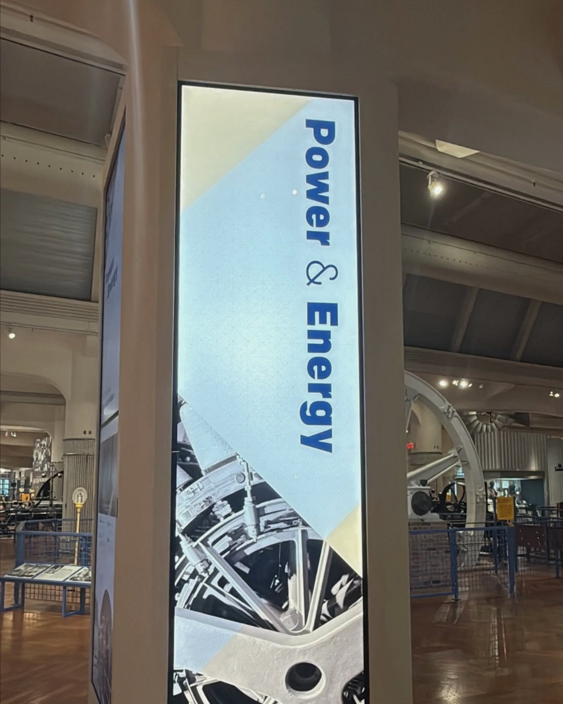